Geospatial Mapping of Health Inequalities
Sujon Mia - StatAid Research Lab
Source:vignettes/mapping-survey-indicators.Rmd
mapping-survey-indicators.RmdIntroduction
Once health inequality metrics—such as the Concentration Index for stunting or wasting—have been calculated, visualizing their geographic distribution is the next critical step. Spatial mapping allows researchers and policymakers to instantly identify highly vulnerable zones, such as the disparities often seen between environmentally exposed coastal regions and inland districts.
The survey_map_indicator() function provides a universal
architecture to merge calculated survey metrics with any standard
spatial shapefile (sf object) and generate
publication-ready thematic maps.
Setup and Package Loading
First, load SurveyNCD alongside the standard spatial and
data manipulation libraries.
The Universal Mapping Workflow
Because global health researchers work across vastly different
geographies, this function is completely geography-agnostic. It requires
three inputs: 1. Aggregated Survey Data: A dataframe of
your calculated metrics. 2. A Spatial Shapefile: An
sf object containing the regional boundaries. 3. A
Join Key: The name of the column that matches exactly between
the two datasets (e.g., district name or administrative code).
1. Preparing the Data
For this reproducible example, we will use a built-in spatial dataset of North Carolina counties and simulate stunting inequality metrics.
Note: In a real-world application, you would replace this with your own shapefile (e.g., the 64 administrative districts) and your calculated DHS output.
# Load a standard testing shapefile
regional_map <- st_read(system.file("shape/nc.shp", package="sf"), quiet = TRUE)
# Simulate SurveyNCD output data for specific regions
survey_metrics <- data.frame(
NAME = c("Ashe", "Alleghany", "Surry", "Currituck"),
Stunting_Inequality = c(-0.45, -0.20, 0.15, 0.35)
)2. Generating the Spatial Plot
Pass the data, the shapefile, the join key ("NAME"), and
the variable you want to color-code ("Stunting_Inequality")
directly into the function.
inequality_map <- survey_map_indicator(
survey_data = survey_metrics,
shapefile = regional_map,
join_by = "NAME",
fill_var = "Stunting_Inequality"
)
# Display the map
print(inequality_map)
Interpretation
The resulting thematic map utilizes a colorblind-safe, perceptually
uniform palette (magma). * Regions with matching data are
shaded according to their inequality severity. * Regions present in the
shapefile but missing from the survey data are automatically rendered in
a neutral gray (grey90) to maintain geographic context
without misrepresenting missing data.
This automated visual output is formatted to meet strict graphical standards for high-impact journals.